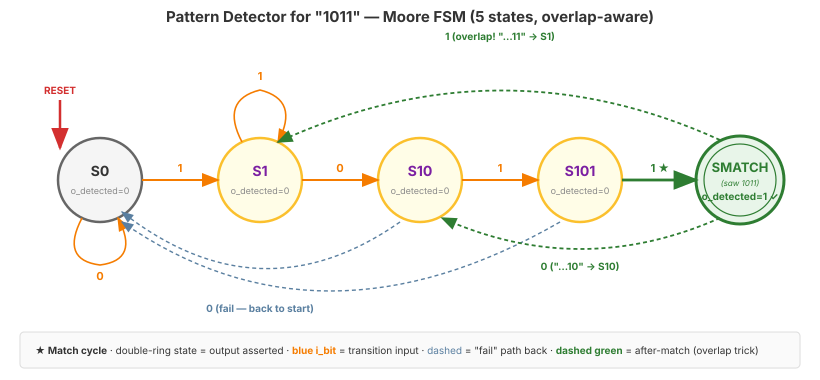
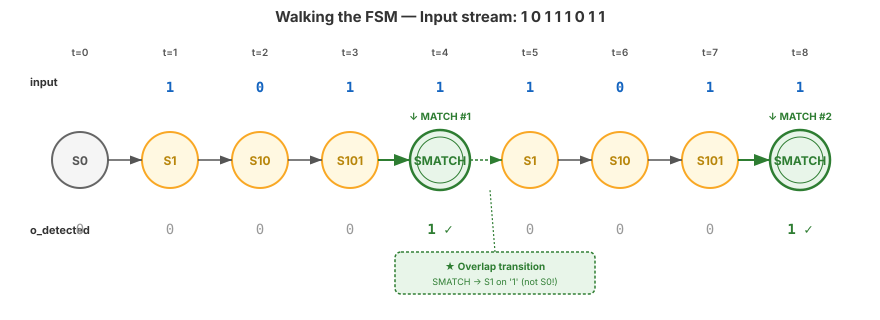

Video 4 of 4 · ~10 minutes
Dr. Mike Borowczak · Electrical & Computer Engineering · CECS · UCF
Every serial protocol — Ethernet, USB, PCIe, CAN bus, Bluetooth, WiFi, NFC, MIDI — begins with a hardware block that watches a stream of bits for a specific opening sequence and locks on. Network switches run dozens of these watchers in parallel, one per port, every cycle. When you “connect” to anything that isn't visible text, a small piece of hardware just recognized a pattern in the noise.
Pick any major industrial software disaster — Knight Capital, Ariane 5, Boeing MCAS, the 2003 blackout — and the post-mortem says some variation of “an unexpected combination of inputs caused the system to enter a state the designers had not anticipated.” Not “a calculation was wrong.” A state was missed. The methodology is the difference between enumerating those states up front and discovering them in production.
“I know the problem. I'll start writing Verilog, figure out states as I go, debug in simulation. The editor IS my thinking environment.”
Draw the state diagram on paper first. Enumerate states, transitions, outputs. Validate by walking through test inputs with a pencil. Only then open the editor, where you apply the 3-block template to your already-correct diagram. Debugging a diagram is seconds; debugging Verilog is hours.
Assert o_detected for one cycle whenever the last 4 input bits form 1011. Overlapping patterns allowed.
↑ three matches; the last two are overlapping with the previous.
S0: nothing matched yetS1: last bit was 1 (matched 1•••)S10: last two bits were 10 (matched 10••)S101: last three bits were 101 (matched 101•)SMATCH: just saw the final 1 of 1011 — this is where o_detected = 1
SMATCH on a 1, we don't go back to S0 — we go to S1. Why? Because the 1 we just consumed could be the start of the next match. From SMATCH on a 0, the last two bits are 10, which is a prefix of 1011 — go to S10. Always keep the longest suffix that's still a valid prefix.
Input stream 1 0 1 1 1 0 1 1. Trace the state and o_detected per cycle.

t=4→t=5 is the SMATCH → S1 transition that makes back-to-back matches possible. Forgetting this edge is the classic bug — your second match would never fire.
~6 minutes
▸ COMMANDS
cd lecture_examples/week2_day07/d07_s4_ex2/
cat day07_ex02_pattern_detector.v # 3-block "1011" Moore
make sim # covers overlap + near-miss
make wave
make stat▸ EXPECTED STDOUT
PASS: reset -> S0 (no detect)
PASS: detects '1011'
PASS: ignores '1010' (no match)
PASS: overlap: detects first '1011'
PASS: overlap: detects second '1011'
=== 18 passed, 0 failed ===
SB_DFF: 3 (5 states -> ceil(log2 5)=3)
SB_LUT4: ~6▸ GTKWAVE
Signals: i_bit · r_state · o_detected. Watch state traverse S0→S1→S10→S101. Detection pulses are 1-cycle wide. The overlapping pattern exercises the S101→S1 transition explicitly.
always blocks (state reg, next-state, output)
r_next = r_state;), default: case at enddefault: case at endlocalparam, never magic numbers<= in sequential (Block 1); blocking = in combinational (Blocks 2, 3)Ask AI: “Design an FSM that detects the pattern ‘110101’ in a serial bit stream. Include the state diagram description, 3-block Verilog, and a self-checking testbench with overlapping test cases.”
TASK
Ask AI for a complete FSM package.
BEFORE
Predict: 6 states + idle, 3-block Verilog, overlapping sequence tests.
AFTER
Strong AI handles overlaps. Weak AI only handles non-overlapping cases — subtle bug.
TAKEAWAY
Always test the overlap case. AI-written FSMs commonly miss it.
① Draw the state diagram before writing code.
② Walk test cases with a pencil. Catch bugs in diagrams, not in Verilog.
③ Pattern detector overlaps: new match can begin from a partial match.
④ Test every transition, including the edge cases.
Q1: Why is the state diagram drawn before the Verilog?
Q2: What transition happens when a pattern detector is in its near-final state and receives an input that completes an overlapping prefix?
Q3: For a 6-state FSM on iCE40, which encoding is likely more compact?
make stat.Q4: Name three cases your testbench must cover for a pattern detector.
🔗 End of Topic 7
Topic 8 · Hierarchy, Parameters, Generate
▸ WHY THIS MATTERS NEXT
You've built modules up to a few hundred lines. Real designs have thousands of lines, across dozens of files, arranged hierarchically. Topic 8 teaches the three Verilog features that make this scale: module hierarchy, parameters for configurable IP, and generate blocks for array-style replication. By end of Topic 8 your growing module library will become a reusable toolbox.